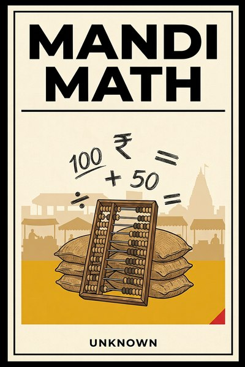

Library › Money & Finance
Mandi Math — Summary & Key Lessons

The street's own finance: haggling, float, turnover and the arithmetic that never went to college.
📖 OPEN THE FULL INTERACTIVE BREAKDOWN →🌐 Read it in Hindi, Hinglish, Gujarati, Tamil & 22 more languages — free, with audio.
💡 The Big Idea
Before spreadsheets, there was the mandi, and the mandi has always known things finance rediscovers every crisis: price is a conversation, float is a business model, velocity beats margin, and the ledger that is updated daily beats the one reconciled quarterly. This book walks the market lane by lane and pulls out ten rules of money that work at a vegetable cart and at a central bank, because arithmetic does not care about the size of the sack. Its examples come from the public record: chit funds that funded industry, a stock scam built on borrowed paper, retailers who turned inventory like vegetables and speculators who cornered silver and drowned. The mandi's math is unsentimental, daily and open-air, which is exactly what makes it worth learning.
🧠 The 10 Key Lessons
Lesson 1: Price Is a Conversation
Chapter 1: The Haggled Rupee
The mandi never believed in one price. It believed in discovery: ask, counter, walk away, return. Haggling looks like friction to a spreadsheet and like information to a market, because the final number carries data no sticker can: what the buyer would actually pay today, for this sack, in this mood. Fixed pricing is efficient; negotiated pricing is true.
📖 Example: Real estate, art, mergers and salaries all remain negotiated markets for exactly this reason, and the corporate world's own ritual of sealed bids is the mandi's shout formalized for people who dislike shouting. Read the full example →
⚡ Do this: Take one price in your business that you set unilaterally and negotiate it live with your next three counterparties. Record what the conversation reveals about what the number should have been.
Lesson 2: Float Is Free Money
Chapter 2: The Committee
The chit fund, the kitty, the committee: the street invented community float long before modern finance had a word for working capital. Ten hands pay monthly, one hand takes the pot, and the group's memory is the credit score. It is float economics at human scale, and it funded more small enterprises than any bank branch has ever counted.
📖 Example: Kerala's chit funds and the kuttu committees of every market lane financed shops, weddings and first inventories for decades, and the modern fintech wave is largely the mandi's committee rebuilt with an app and a KYC form. Read the full example →
⚡ Do this: Start or join one three-person committee this quarter with amounts you can afford to lose. The lesson is not the yield, it is watching float and trust do arithmetic together.
Lesson 3: Never Carry What You Can Turn Daily
Chapter 3: The Empty Crate Evening
The vegetable vendor aims to go home with an empty crate and cash, not with vegetables. Stock that sleeps is risk that compounds: it wilts, rots, dates or goes out of fashion, and meanwhile it owes its cost to somebody. The mandi's obsession is turnover, because a thin margin that turns daily beats a fat one that gathers dust in a warehouse paying rent.
📖 Example: DMart built its empire on rapid-turn, few-SKU, pay-fast retail, and the garment trader's end-of-season sale is the moment he admits the mandi's law: inventory is perishable even when it looks immortal on a hanger. Read the full example →
⚡ Do this: Compute your stock-turn days today. Set a target date, one quarter out, to cut them by a quarter, and price the slowest quarter of your inventory to leave.
Lesson 4: The Weight Is the Contract
Chapter 4: Trust With a Shared Scale
The mandi runs on honor systems so old they look like folklore: shared scales, hundis honored across communities, deals sealed before witnesses with nothing signed. Trust there is not soft; it is infrastructure, cheaper than lawyers and faster than courts, maintained by the one penalty that matters, which is never being dealt with again.
📖 Example: Bombay's old cotton trades and Gujarat's hundis cleared crores on reputation alone, and the diamond trade of Surat still runs billions on handshake consignments that no court ever papered. Read the full example →
⚡ Do this: Write down the three trust terms of your most important unwritten agreement: what each side gives, what breaks it, and what happens then. Show it to the other side. Watch how fast the relationship matures.
Lesson 5: Buy the Wilted, Sell the Fresh
Chapter 5: Counter-Cyclical Hands
The mandi buys distress at dawn and sells desire at dusk. The trader who wants the good stuff pays retail; the one who wants the cheap stuff arrives at the wilted hour. Every market has a time of day, a season or a panic when sellers need hands more than they need price, and the counter-cyclical buyer simply makes sure to be the hand that shows up.
📖 Example: The Tatas buying Air India back at the bottom of its despair, and every private-equity turn on distressed retail, is mandi math with bigger sacks: the asset did not change, only the seller's calendar did. Read the full example →
⚡ Do this: List two assets or suppliers in your market who are currently in someone's distressed hour. Approach one this quarter with a clean, respectful, cash-ready offer.
Lesson 6: Margin Lives in the Sack, Not the Signboard
Chapter 6: The Wholesale Spread
The signboard advertises one price; the sack behind the shop trades at another. The mandi knows every retail business is also a wholesale business, and the real profit often lives in the spread between the two, in case lots, credits and relationships the customer never sees. Businesses that only think at signboard price miss half their own economy.
📖 Example: Every kirana that supplies weddings, canteens and neighboring stalls runs a quiet B2B book at different margins, and the modern D2C brands that survived are the ones that quietly built the same second book in bulk. Read the full example →
⚡ Do this: Pick your best-selling product and price a genuine bulk or B2B version of it this month. The goal is a second margin, not a discount.
Lesson 7: Hedge With the Harvest
Chapter 7: The Natural Hedge
The farmer who plants two crops that fail in opposite seasons has invented the hedge without a single formula. Pairing what you sell against what you buy, or what earns against what spends, is the oldest risk tool there is: match a cost that rises with a revenue that rises with it, and the volatility cancels before it reaches your sleep.
📖 Example: Airlines hedge fuel, exporters hedge currencies, and the street does it weekly: the cart that sells umbrellas in July and sunglasses in May never begs the sky for anything. Read the full example →
⚡ Do this: Name your largest input cost. Find or design one revenue line that naturally rises when it rises, even partially, and grow that line by ten percent this quarter.
Lesson 8: Interest Eats What Inflation Feeds
Chapter 8: The Real Rate on the Street
The mandi thinks in real rates because it lends its own money and feels every default in its ribs. It knows the difference between the number on the loan paper and the number your pocket actually experiences after inflation and risk. Every financial illusion in history, from permagrowth stocks to yield tricks, lives in the gap between those two numbers.
📖 Example: The 1992 securities scam was built on borrowed paper wearing borrowed returns, and the flight of the satta bazaar that year was the mandi repricing reality faster than the ledgers could print it. Read the full example →
⚡ Do this: Compute the true all-in cost of your most expensive capital: rate, fees, covenants, and what it costs you in behavior. If you cannot say the number out loud without flinching, renegotiate or repay it.
Lesson 9: Small Tickets, Many Hands
Chapter 9: The Portfolio of Small Debts
The mandi lends small and often, never big and once. Ten small debts to known faces beat one large debt to an impressive stranger, because defaults arrive one at a time and diversification is just politeness about arithmetic. The impulse to make one big beautiful bet is where both villages and hedge funds go to die.
📖 Example: Microfinance's group lending worked because the portfolio was the collateral, and Bunker Hunt's attempt to corner silver in 1980 remains the all-time monument to what one enormous position does to a family that owned everything else safely. Read the full example →
⚡ Do this: If you sell to or lend to or depend on a few large counterparties, set a hard cap this month: no single one above a third of your exposure. Enforce it before you need it.
Lesson 10: The Ledger Never Sleeps
Chapter 10: The Nightly Close
The vendor reconciles in chalk before sleeping, because tomorrow's buying depends on today's truth. The nightly close is five minutes of honesty that prevents the quarterly catastrophe of accumulated self-deception. Accounts are not paperwork; they are the business's memory, and memory ages badly when updated rarely.
📖 Example: Every forensic audit report ever written is, at heart, a list of reconciliations somebody postponed, and the best-run street businesses have never once needed a forensic auditor to know where they stand. Read the full example →
⚡ Do this: Adopt a daily five-minute close: money in, money out, what you are owed, what you owe. Do it tonight, and calendar it at the same time every day.
✅ 5-Step Action Plan
- Negotiate one traditionally fixed price live, three times, and record what it teaches.
- Run a small committee or float circle you can afford, for the lesson not the yield.
- Cut stock-turn days by a quarter within the quarter; price dead inventory to leave.
- Pair your biggest cost with one offsetting revenue line; grow it ten percent.
- Do the five-minute nightly close starting tonight, same time, every day.
⚠️ When This Doesn't Work
This is a TheSmallBook Original: an in-house work published under the name Unknown. Its rules are distilled from public market history (chit funds, DMart, the 1992 scam, the Hunt silver corner, microfinance) and are teaching frames, not investment or lending advice. Street finance includes genuinely unsafe corners; this book borrows only the arithmetic and none of the illegality.
💀 The Graveyard Proves It
🐂 Harshad Mehta — The Big Bull Who Broke the Banks. Burn: ₹4,000+ crore scam. Read the full case study →
💬 Best Quotes from Mandi Math
- “In the mandi, price is never a number. It is a negotiation wearing a number.”
- “Velocity is the poor man's margin, and it has made more fortunes than markup ever did.”
- “The ledger updated nightly forgives; the ledger updated quarterly convicts.”
Interactive version: mark lessons as read, listen in your language, share quote cards.